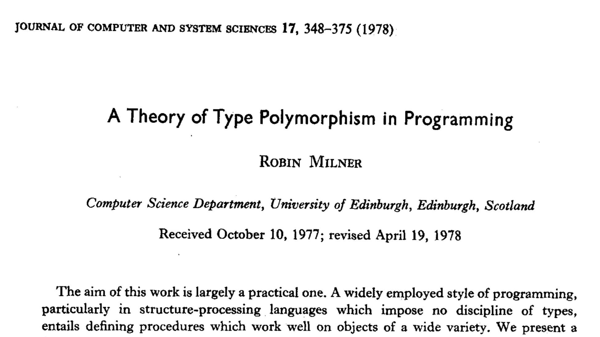

Ph.D. Proposal Review
When and How Java Developers Give Up Static Type Safety
Luis Mastrangelo
- Prof. Matthias Hauswirth
- Prof. Nathaniel Nystrom
- Prof. Antonio Carzaniga
- Prof. Gabriele Bavota
- Prof. Hridesh Rajan
- Prof. Jan Vitek
https://acuarica.gitlab.io/phd-proposal/phd-proposal.pdf
“well-typed programs cannot go wrong”

Unsafe Intrinsics
Reflective Capabilities
For what purpose do developers circumvent static type systems?
Unsafe API
- To what extent does the Unsafe API impact common application code?
- How and when are Unsafe features used?
Casting
- How frequently is casting used in common application code?
- How and when casts are used?
- How recurrent are the patterns for which casts are used?
Violating Type Safety
class C {
private Object f = new Object();
}
long fieldOffset = unsafe.objectFieldOffset(
C.class.getDeclaredField("f"));
C o = new C();
unsafe.putInt(o, fieldOffset, 1234567890);
Crashing the Virtual Machine
unsafe.freeMemory(1);
Violating Method Contracts
void m() {
unsafe.throwException(new Exception());
}